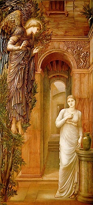

Sacred Texts Esoteric
|

The Anunciation, by Edward Burne-Jones [1876-9] (Public Domain Image) |
Cosmic Consciousnessby Richard Maurice Bucke[1901] |
This is an attempted scientific study of illuminated individuals. Bucke provides three dozen very consistent examples of 'cosmic consciousness.' Some of these are the usual suspects, and others are contemporary case-histories which Bucke collected. Bucke proposed that these enlightened figures are evolutionary jumps, the precedecessor of a more advanced species.
Production Notes: Cosmic Consciousness is laid out in a very advanced fashion which made the creation of an etext of it complicated. Bucke used three levels of type in this book so as to allow two level nested comments. In the book, relationships between the two levels of comments are often implicit based on their position on the page. In this etext the blocks of the two kinds of comment text have been linearized and cross-referenced using HTML links. The first level of comments are displayed in indented blue type, and the second level of comments are displayed in a more indented purple type. Blackletter type is rendered using Lucida Blackletter if present on your system.